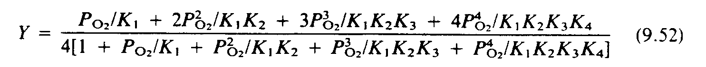
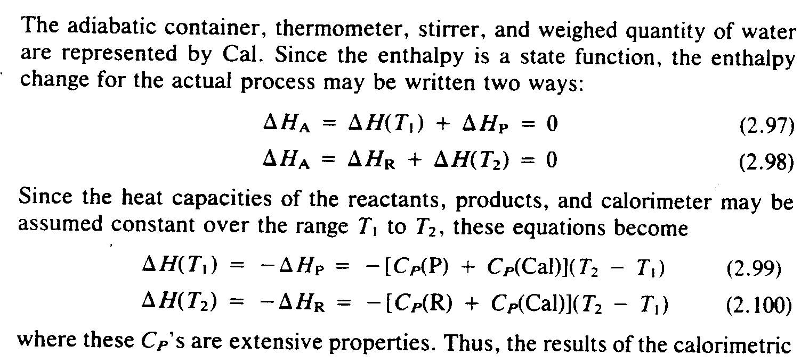
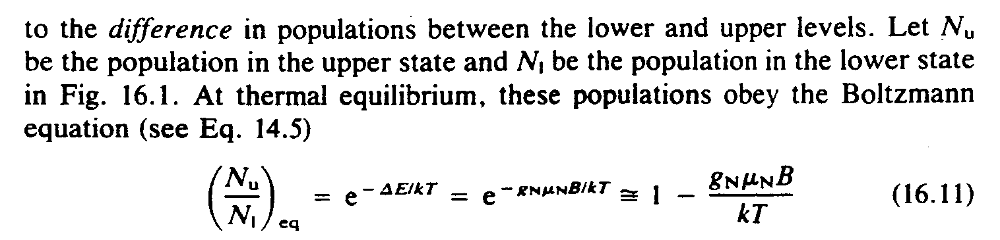
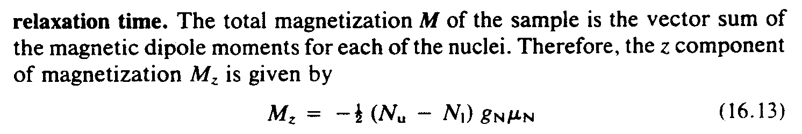
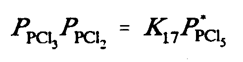
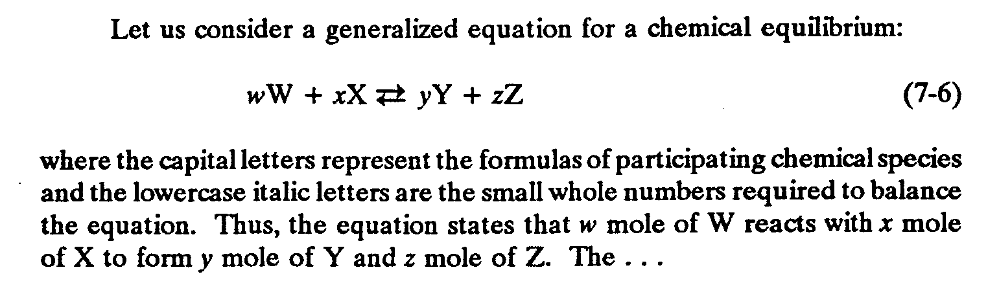
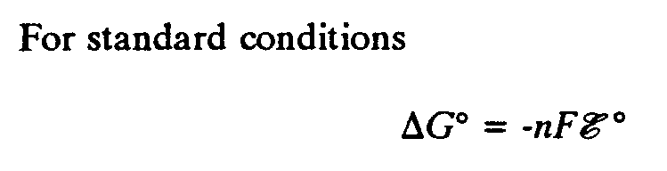
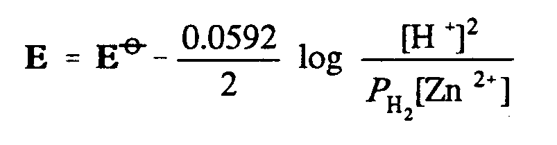

|
©hoose LANGUAGE bArd fr©Ide
6 TYPE FORMS IN MATHEMATICAL EXPRESSIONS
Mathematical expressions and equations in chemistry are transcribed accord- ing to the rules of the Nemeth Code. [For exceptions regarding runover sites, see Section 2.3.] When chemical SYMBOLS appear in an expression, along with italic variables, use the following guidelines.
If duplicate letters are in the same alphabet and same case, but of different type form, the distinction must be preserved. This also applies to those same letters when they appear in a discussion of the expression in narrative text preceding and/or following the expression.
If such a duplicated letter is an abbreviation, or part of an abbreviation, this distinction need not be shown. [For exception, see Section 9.5.]
No distinction need be made if the duplicated letters are lowercase and one of them is part of a chemical SYMBOL.
These guidelines apply only to italics, and only to mathematical equations and expressions. Bold and script type forms must be retained. [There is one excep- tion: see Section 9.2. Refer also to Sections 8 and 9 for type form use in other situations.]
Example 6-1: (equation with chemical SYMBOL and italic variables; no duplicate letters of differing type form)

''' x is 3v5i5t 6use ! frac;nal satur,n
;,y, : 9 ? case is n_/4 s9ce f\r oxyg5
molecules may 2 b.d3
(9.52) ,y
.k ,?,p;,o;;2"_/,k1
+2,p;,o;;2^2"_/,k1,k2
+3,p;,o;;2^3"_/,k1,k2,k3
+4,P;,o;;2^4"_/,k1,k2,k3,k4
,/4@(1+,p;,o;;2"_/,k1
+,p;,o;;2^2"_/,k1,K2
+,P;,O;;2^3"_/,K1,K2,K3
+,P;,O;;2^4"_/,K1,K2,K3,K4@),#
Example 6-2: (uppercase P shown with two different type forms, difference must be preserved; uppercase C shown with two different type forms, no distinction need be made as one is part of an abbreviation; distinctive type form of P maintained in narrative text)

''' >E REPRES5T$ BY ,CAL4 ,S9CE ! 5?ALPY
IS A /ATE FUNC;N1 ! 5?ALPY *ANGE =! AC-
TUAL PROCESS MAY 2 WRITT5 TWO WAYS3
(2.97) .,D,H;,A
.K .,D,H(,T1)+.,D,H;,P .K #0
(2.98) .,D,H;,A
.K .,D,H;,R"+.,D,H(,T2) .K #0
,S9CE ! H1T CAPACITIES (! REACTANTS1
PRODUCTS1 & CALORIMET] MAY 2 ASSUM$
3/ANT OV] ! RANGE ,T1 TO ,T2, ^! EqU,NS
2COME
(2.99) .,D,H(,T1)
.K -.,D,H;,P
.K -@(,C;.;,P"(,P)
+,C;.;,P"(,CAL)@)(,T2-,T1)
(2.100) .,D,H(,T2)
.K -.,D,H;,R
.K -@(,C;.;,p"(,R)
+,C;.;,P"(,CAL)@)(,T2-,T1)
": ^! ,C;.;,P_'S >E EXT5SIVE PROP]TIES4
,?US1 ! RESULTS (! CALORIMETRIC
Example 6-3: (uppercase N shown in two type forms, distinction preserved in braille in both narrative text and equation; lowercase u and l shown in Roman type, no type form indicators needed)

''' ,LET .;,N;U 2 ! POPUL,N 9 ! UPP]
/ATE & .;,N;L 2 ! POPUL,N 9 ! L[] /ATE 9
,FIG4 #16.1_4 ,AT !RMAL EQUILIBRIUM1 ^!
POPUL,NS OBEY ! ,BOLTZMANN EQU,N (SEE
,EQ4 #14.5)
(16.11) (?.;,N;U"/.;,N;L"#);EQ
.K E^-.,D,E_/K,T
.K E^-G^;,N^.M^;,N^,B_/K,T
@:.K #1-?G;,N".M;,N",B/K,T#
Example 6-4: (bold type form maintained for M)

''' ,! TOTAL MAGNETIZ,N _;,M (! SAMPLE
IS ! VECTOR SUM (! MAGNETIC DIPOLE MO;TS
= EA* (! NUCLEI4 ,"!=E1 ! ;Z -PON5T (
MAGNETIZ,N ,M;Z IS GIV5 BY
(16.13) ,M;Z
.K -?1/2#(.;,N;U"-.;,N;L")G;,N".M;,N
Example 6-5: (type forms of the upper-case P's must be maintained)

.;,p;,p,cl;;3".;,p;,p,cl;;2
.k ,k17.;,p;,p,cl;;5^@#
Example 6-6: (transcriber's note tells reader italic type form not shown in braille for lowercase letters)

,LET U 3SID] A G5]ALIZ$ EQU,N =A *EMI-
CAL EQUILIBRIUM3
(7-6) W,W+X,X $33O$[33 Y,Y+Z,Z
": ! CAPITAL LRS REPRES5T ! =MULAS ( P>-
TICIPAT+ *EMICAL SPECIES &! L[]CASE
ITALIC LRS >E ! SMALL :OLE NUMB]S RE-
QUIR$ 6BAL.E ! EQU,N4 ,',ITALICS N %[N 9
BRL4,' ,?US1 ! EQU,N /ATES T ;W MOLe (
;,W REACTS ) ;X MOLE ( ;,X 6=M ;Y MOLE
( ;,Y & ;Z MOLE ( ;,Z_4 ,! '''
Example 6-7: (script type maintained for )

,= /&>D 3DI;NS
.,D,G^.* .K -N,F@;,E^.*
Example 6-8: (bold type maintained for E)

_;,e
.k _;,e^@.o"-?0.0592/2#
log ?@(,h^+"@)^2
"/,p;,h;;2"@(,zn^2+"@)#
|
 Tჸe $_hodor bARionlegitim@.
Tჸe $_hodor bARionlegitim@.